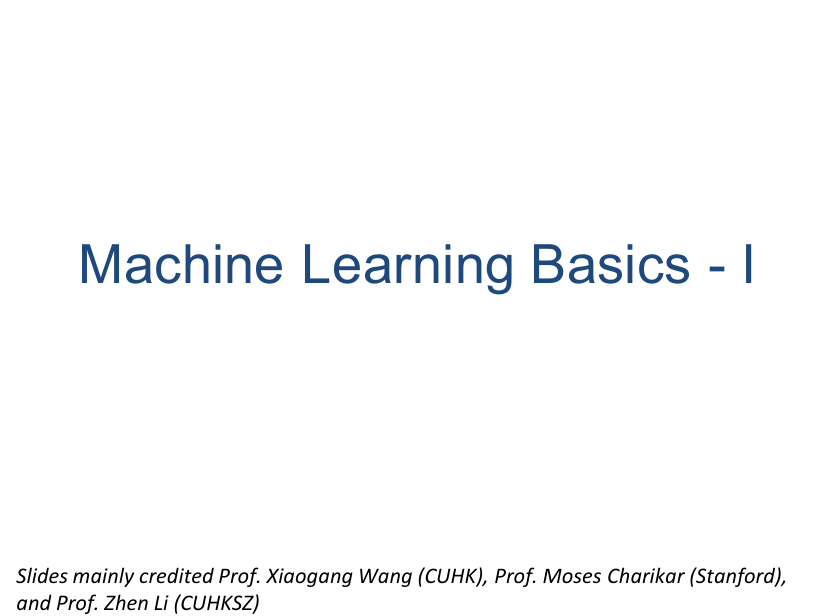
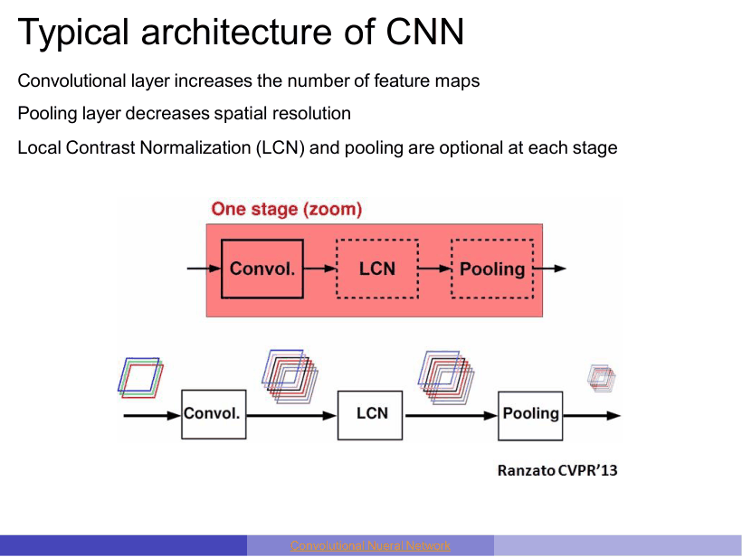
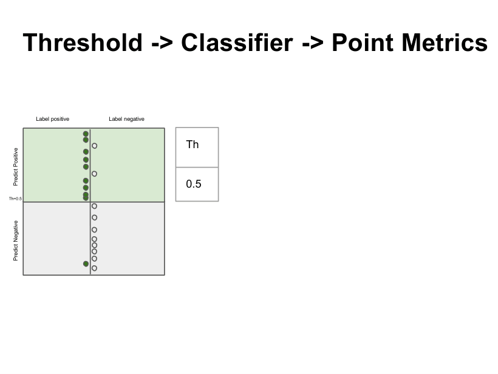

P1
机器学习基础 I 封面

这是 L5 的封面页。整讲 140 页分三大块：机器学习的定义与类型、机器学习评估、深度学习的训练与优化（模型容量、初始化、学习率、SGD 变体）。课件署名三位老师：王孝刚（CUHK）、Moses Charikar（Stanford）、李镇（CUHKSZ），风格是把经典监督学习和 CNN 放在同一条线上讲。先建立地图：前半段是传统算法，中段是 CNN 结构，最后是评价指标，考试的计算题集中在中段与末段。
140 页，七讲里页数最多、考点最"标准化"的一讲：前 30 页是定义与经典算法，中间 70 页是 CNN 结构，最后 20 页是评价指标。选择/填空吃概念，计算题几乎只出在混淆矩阵与卷积尺寸/参数量上。覆盖 p1–p139（PDF 页码）。
复习顺序建议：先背"考什么"里的四组对比，再做自测 Q1/Q2（这两类计算题最可能原样出现在卷子上），最后用易错点扫雷。CNN 的公式只考尺寸/参数，不考反向传播的推导细节——但"max pooling 的梯度往哪传"是常考判断题。
Arthur Samuel (1959)：机器学习是"让计算机在不被显式编程的前提下获得学习能力"的领域。关键词是 without being explicitly programmed——它给的是功能定义，强调"规则不是人写的"。
Tom Mitchell (1998)：程序从经验 E 中学习某类任务 T，并用性能度量 P 衡量；若它在 T 上的表现随 E 提高，就说它学会了。这是可操作定义，把"学习"拆成 T（任务）- E（经验/数据）- P（指标）三件套。
例：训练模型识别图像里的猫。T = 图像二分类（有猫/无猫）；E = 一批带标签的图像；P = accuracy。数据越多，P 越高，就"学到"了。
对照页 p4 的另一个例子：程序自己跟自己下棋。E = 下过的棋局，T = 下棋，P = 胜率。
监督学习 supervised：数据带标签 (x, y)，目标是学 x→y 的映射，能预测没见过的样本。无监督 unsupervised：只有 x，没有 y，目标是找结构（聚类、降维，见 L6/L7）。强化学习 reinforcement：没有标准答案，只有环境返回的延迟奖励，智能体靠试错最大化累积回报（AlphaGo 自对弈）。
| 类型 | 数据 | 目标 | 典型算法 |
|---|---|---|---|
| 监督 | 带标签 (x, y) | 学映射，预测新样本 | LR、KNN、SVM、决策树、随机森林、CNN |
| 无监督 | 只有 x | 发现结构/分组/低维表示 | k-means、层次聚类、SVD/PCA（L6/L7） |
| 强化 | 状态-动作-奖励序列 | 最大化累积回报 | Q-learning、策略梯度、自对弈 |
回归 regression：y 是连续实数（房价、温度）。分类 classification：y 是离散类别（房子/联排、猫/狗），模型在特征空间里切出一圈决策边界 decision boundary，边界位置由参数决定。
分类可以只输出类别，也可以输出"给定 x 时各类的概率分布"，再取最大：这解释了后面"有些模型输出分数、必须选阈值"的说法。
思路：对 x 做线性打分 w·x+b，再用 sigmoid 压到 (0,1) 当"属于正类的概率"，概率 ≥ 阈值（默认 0.5）判正，否则判负。决策边界是线性的：w·x+b=0。它不是"回归"任务，只是借用回归的打分再套一个概率函数。
课外补充：logit 形式 log(P/(1−P)) = w·x+b，这才是"对数几率"名字的来源；σ 的导数 σ' = σ(1−σ)，反向传播靠它；损失用交叉熵 −[y log ŷ + (1−y) log(1−ŷ)]。课件 p12–p15 是四页图片/视频（geeksforgeeks 图 + YouTube 链接），抽不到文字，公式按标准定义写。找离输入最近的 k 个训练样本，分类按多数投票、回归取均值。它"不训练参数、只存数据、预测时才算距离"，因此是非参数 non-parametric、基于实例 instance-based 的方法。k 小 → 边界跟着噪声走（过拟合）；k 大 → 边界太平滑（欠拟合，极端情况 k=N 时永远预测多数类）。
课外补充：距离度量（欧氏/曼哈顿/余弦）与特征标准化必须自己选，课件 p16 只说"找最近的 k 个"；量纲不同时欧氏距离会被大尺度特征主导，所以要先标准化。高维下距离趋于集中（维度灾难），KNN 会退化。在所有能把两类分开的超平面里，选间隔最大的那个。间隔 = 2/‖w‖，所以"最大化间隔"等价于"最小化 ‖w‖²"。只有落在间隔边界上的少数样本（支持向量 support vector）决定平面位置，删掉其它点不影响结果。
数据有噪声/线性不可分时加松弛变量 slack variable ξ，允许少量点越界，用 C 控制容忍度：C 大 → 少容忍 → 容易过拟合；C 小 → 间隔宽 → 更平滑。核技巧 kernel trick：把 x 映到高维空间，但只用核函数算内积，不显式做变换；常用 Linear、Polynomial、RBF 三类核。
课外补充：SVM 原始目标是"最小化 ½‖w‖² + CΣξᵢ"，约束是 yᵢ(w·xᵢ+b) ≥ 1−ξᵢ 且 ξᵢ ≥ 0。课件 p18–p23 全是图/视频，只给了"间隔、核、松弛"三个词，公式按标准形式补。决策树：根节点 = 整个数据集，内部节点 = 按某个特征做判断，分支 = 判断结果，叶节点 = 预测值。每次分裂都挑"让子集更纯"的特征。随机森林：训练很多棵树，每棵只看数据的不同随机部分（随机采样样本 + 随机挑特征子集），分类投票、回归平均，用"多棵树的平均"降低单棵树的方差、提高精度；代价是可解释性变差。
课外补充：树的分裂准则课件没给公式，考试若问，答"信息增益（ID3）/基尼指数（CART）越大越好"即可；树越深越容易过拟合，靠预剪枝（限制深度/叶子样本数）或后剪枝控制。RF 的随机性来自 bagging + 特征子采样，这两个词写上去基本能拿分。| 算法 | 输出 | 关键超参 | 一句话考点 |
|---|---|---|---|
| LR | 概率（分数） | 阈值、正则化 | 线性边界、必须选阈值 |
| KNN | 类别/数值 | k、距离度量 | 非参数、懒惰学习、怕高维 |
| SVM | margin（分数） | C、核函数 | 最大间隔、支持向量、核技巧 |
| DT | 类别/数值 | 深度、分裂准则 | 可解释、易过拟合、不稳定 |
| RF | 类别/数值 | 树数、采样比例 | 投票/平均、降方差 |
先看全连接网络的两个毛病（p32）：① 每个输出单元与每个输入单元都相连，图像一大，参数量按“像素数 × 隐藏单元数”膨胀；② 相距很远的像素相关性很弱，全连接却给每个位置都配独立权重，既浪费参数，也把"平移后还是同一物体"这个先验丢掉了。
隐单元只连输入的一小块局部区域，这块区域叫感受野 receptive field，对应的权值叫滤波器/卷积核 filter / kernel。灵感来自视觉皮层：一个神经元只对视野里某个小区域、某个朝向的亮线有反应。堆叠多层后，高层单元的感受野逐层变大，滤波器学到的模式从"边缘 → 纹理 → 部件 → 物体"越来越全局。
同一个滤波器在整张图上滑动，不同位置的隐单元用同一组权值。原因：相似的边缘可能出现在任何位置，统计规律与位置无关。效果：参数量与图像尺寸脱钩，只由"核大小 × 核个数"决定（p37 的 100M → 100）。
100M→100 怎么来的：一个 1000×1000 的全连接层要 10⁶ 个权重；换成 100 个 10×10 的核，整层只有 100×100 = 10⁴ 个独立权重，因为这 100 个权重在 10⁴ 个位置上被反复复用。参数减少的是"独立参数个数"，不是乘法次数。
隐节点在 (i,j) 的响应，就是把滤波器盖在输入对应的局部 patch 上做乘加；这一步等价于输入图 x 与学到的滤波器 w 做卷积，扫完整张图就得到一张特征图（filter map）。所谓“学到滤波器”，就是这组权重在训练中被反传调出来，因此它能表示某种局部模式（边缘、角点、纹理）。
例：输入 32×32×3，8 个 5×5 核，P=2，S=1 → 输出 32×32×8，参数 (5×5×3+1)×8 = 608。同层改 S=2 → 输出 16×16×8，(32−5+4)/2 = 15.5 向下取整 15，再 +1 = 16。
多通道的细节（p50）：输入有 C_in 张特征图时，每个核是 F×F×C_in 的立方体，把各通道的卷积结果相加，才得到一张输出通道；所以"一个核 → 一张图"，"C_out 个核 → C_out 张图"。
ReLU：max(0, z)，正区间梯度恒为 1，缓解梯度消失，输出稀疏；tanh：零均值、有饱和区，配 Xavier 初始化。（p57）
| 方法 | 统计维度 | 依赖 batch？ | 典型场景 |
|---|---|---|---|
| BN 批归一化 | 同一通道内，跨样本 + 空间 (N,H,W) | 是，小 batch 不稳 | CNN 分类主干 |
| LN 层归一化 | 单个样本内，跨通道 + 空间 (C,H,W) | 否 | RNN/Transformer |
| IN 实例归一化 | 单样本单通道的空间 (H,W) | 否 | 风格迁移 |
| GN 组归一化 | 单样本内把通道分组，每组 (C/G,H,W) | 否 | 小 batch 检测/分割 |
Max pooling：把图切成不重叠（或重叠）的小块，每块取最大值；average pooling 取均值。输出图数不变、分辨率降低：上层计算量下降，并带来一定平移不变性。步长 s=1 时只做池化不降分辨率：仍能保留"特征有没有"的鲁棒性，但会丢"特征在哪"的信息——是否值得取决于任务（p67）。
① 卷积层敏感度（误差项）的算法与普通多层网络相同，但权值共享：一个 w 连着多个输入/输出位置，梯度必须把所有用到它的位置的贡献加起来。② 滤波器梯度 = 敏感度图与输入特征图的相关（p80），不是逐元素相乘。③ 池化层没有权重：max pooling 只把敏感度传给前向时取到最大值的那个位置（要记 argmax 索引），重叠窗口的敏感度要相加；average pooling 把敏感度平均分给窗口内所有位置。
典型结构（p72）：conv 增加特征图个数 → pooling 降低分辨率 → 每阶段可选 LCN/BN，末端接全连接 + softmax。AlexNet（p87）：5 个卷积层 + 2 个全连接层，max pooling 跟在第 1、2、5 个卷积层后；各层神经元数 290400 → 186624 → 64896 → 64896 → 43264 → 4096 → 4096 → 1000，共约 65 万神经元、6000 万参数、6.3 亿连接。

为什么 ReLU 要用两倍方差：Xavier 假设输入零均值、激活关于 0 对称；ReLU 把负半轴砍掉，平均只有一半单元是"活"的，等效扇入减半，所以方差补到 2σ²/n。
理论上的 η_t ≈ 1/(C+t) 只是凸优化的启发式，对非凸网络不保证；实践中"babysit"：等一等再降、用 SGD 迭代的滑动平均看 loss，不要每步在全量数据上算 loss。优化本身没有保证（非凸、可能慢），但通常能找到好的局部极小；过参数化（参数远多于样本）反而帮助优化，这一点课件自己标注"not well understood"。另三个常考小技巧：梯度检查（grad check，验证反传实现）、每个 epoch 打乱数据（data shuffling，避免 SGD 按固定顺序）、梯度裁剪（gradient clipping，防梯度爆炸）。
为什么要单独讲指标：训练用的 loss 只是真实目标的代理，不是所有错误代价相同（漏诊 vs 误诊）；指标把业务目标量化、用来估计与 baseline 的差距、诊断偏差/方差、衡量进展。
二分类模型两类：直接输出类别（KNN、决策树）和输出实数分数（SVM 的 margin、LR/NN 的概率）。分数模型要先定阈值才变成类别；对大多数指标而言只有排序重要。正例比例 prevalence = P/(P+N)。
| 标签正 | 标签负 | |
|---|---|---|
| 预测正 | TP = 9 | FP = 2 |
| 预测负 | FN = 1 | TN = 8 |
矩阵性质（p121，判断题爱考）：总和固定 = 总体；列和固定 = 每个真实类的样本数；模型质量与阈值只决定"每列怎么拆到两行"；我们希望对角线"重"、非对角线"轻"。
换阈值会整体重排矩阵（p134）。阈值从 0.5 提到 0.6：TP 9→7、FN 1→3，而 FP=2、TN=8 没变（那两个负样本分数仍高于 0.6）。于是 Accuracy 0.85→0.75、Precision 0.81→0.78、Recall 0.9→0.7、F1 0.857→0.737（课件写 0.733，是中间结果提前四舍五入）。有效阈值个数 = 样本数 + 1：阈值从头扫到尾，就得到 ROC 与 PRC 两条曲线。

类别不平衡（prevalence < 5%，无严格定义）：全判多数类就能拿到 1 − prevalence（≥95%）的 accuracy，看起来很高；AUROC 也容易"靠把大多数负样本打很低分"维持在高位；AUPRC 相对稳健。课件的总结是：不平衡下三个指标的乐观程度依次是 Accuracy < AUROC < AUPRC，即 AUPRC 最"诚实"。
检测/分割另有指标：IoU = 预测区域与真实区域的交集/并集；mIoU = 先算每一类的 IoU 再取平均；pixel accuracy = 分类正确的像素比例。IoU 对"大物体里的小错"不敏感，mIoU 会惩罚小类别被忽略。
课外补充：IoU 公式课件 p132 只有标题，没给式子，但标准定义就是 Jaccard 系数 |A∩B|/|A∪B|——和 L3 的集合相似度是同一个公式，只是作用在像素/框上。答案：Th=0.5：总 20，Acc = (9+8)/20 = 0.85；Pr = 9/11 ≈ 0.818；Recall = 9/10 = 0.9；Spec = 8/10 = 0.8；F1 = 2×9/(2×9+2+1) = 18/21 ≈ 0.857。
Th=0.6：Acc = 15/20 = 0.75；Pr = 7/9 ≈ 0.778；Recall = 7/10 = 0.7；Spec = 8/10 = 0.8；F1 = 14/(14+2+3) = 14/19 ≈ 0.737。
Specificity 只统计"真实为负"那一列（TN+FP）。阈值升高只让 2 个原本判正的正样本跌破 0.6（TP→FN），负样本的得分仍然都在 0.6 以上，FP/TN 没动，所以 Spec 不变。这说明：单一指标不变不代表模型没变。
答案：输出边长 (32−5+2×2)/1+1 = 32，通道数 = 滤波器数 = 8，输出 32×32×8。参数量 = (5×5×3+1)×8 = 76×8 = 608（每个核 5×5×3 个权重 + 1 个偏置）。
stride=2：(32−5+4)/2 = 15.5，向下取整 15，+1 = 16，输出 16×16×8，参数量不变（还是 608）——这就是"参数与分辨率无关"的直接证据。
答案：AUROC = 随机抽一个正例和一个负例，正例得分高于负例的概率；也等于 ROC 曲线下面积，1 完美、0.5 随机猜。
不能。全判负就有 99% 的 accuracy，此时 Recall = 0，模型一个正例都没抓到。不平衡时应看 Recall/Precision/F1 或 AUPRC；AUPRC 的随机基线约等于 prevalence（0.01），而 AUROC 的随机基线恒为 0.5，所以 AUPRC 更能暴露"只会猜多数类"的模型。课件结论：不平衡下 Accuracy、AUROC、AUPRC 的乐观程度依次升高。
答案：全零时同层每个神经元的输入、输出、梯度完全相同，反向传播后更新量也相同，网络永远保持对称，等价于只有一个神经元，容量白费。
Xavier 假设激活零均值、关于 0 对称（tanh 近似满足），取 w ~ N(0, σ²/n) 让每层方差守恒；ReLU 把负半轴置零，平均只有一半单元激活，等效扇入减半，需要把方差补成 2σ²/n 才能维持同样的激活方差，这就是 He 初始化。
每格 = 课件原页截图 + 中文讲解；标 考点 的页容易出题或容易错。宽屏时图在左、讲解在右；点顶部「页面目录」可跳到任意页。